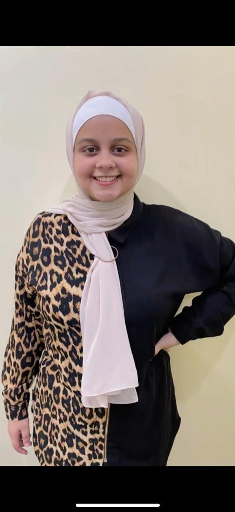

PROFESSIONAL SUMMARY
WORK HISTORY
Public Relations Specialist, 06/2021 to Current
fase Space Apps Sharkye - Sharkya , Egypt
Vice Head Public Relations , 06/2021 to Current
Biology Clup Stem Fayom - Menuf, Egypt
Co Founder , 05/2021 to Current
How it Invented - Menuf, Egypt
Head of Public Relations, 03/2021 to Current
SRS Dakahlia - Dakahlia, Egypt
Public Relations , 03/2021 to Current
Tedx Menofia Stem - Menuf , Egypt
Public Relations , 02/2021 to Current
Tedx Elmejeedy Street - Minya, Egypt
Public Relations , 12/2020 to Current
Be Sonic - Menuf, Egypt
Head of Public Relations, 10/2020 to Current
Talents Team - Menuf, Egypt
Public Relations , 10/2020 to Current
Life Makers - Menuf , Egypt
EDUCATION
Secondary , Expected in 08/2022
Nasr Abdelghafour Secondary School For Girts Mesuf , Egypt
CERTIFICATIONS
https Udrive google cam 'foiderview? id= Tuuf-W-
Bayt Tn P1PxV'OC] puUdrm Dv]
CONTACT
Address Elinenufia Meruf,
Menuf, Egypt
Phone 6201220703514
Email
passartelnosary21@emall.com
WEBSITES,
PORTFOLIOS,
PROFILES
+ https wav linkedin.com
! nipassant-e hosary-
59897 Mbb
+ passantelfosary
N@gmailcen
+ https yaw facebook.co
mbassa tt elhossaty.9
SKILLS
+ Public speaking
+ Strong presentation skills
+ Advances Excel skils
+ Microsoft Word
+ Skiled n Microsoft Office
+ Social media
+ Hard working and self-
motivated
+ Leadership
+ Public selations
+ Social media marketing
« Communication skills
> Leacership
+ Tean leadership
+ Time-management
+ Public relations
+ Creativity
+ Problem solving
+ Respensible
+ Work ethic